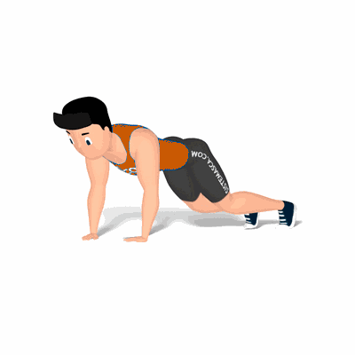

Prancha de Braços Jacks

Exercício para fortalecimento e resistência muscular, bem como, a resistência cardiovascular. Acelera o metabolismo e queima de gorduras.
Ficha Técnica
Tipo: Funcional
Grupo Muscular: Corpo
Aparelho: Nenhum
Músculos: Nenhum
Como realizar
- Deite no solo;
- Barriga para baixo com as pontas dos pés e as mãos apoiadas no chão;
- Eleve o tronco até formar uma linha reta desde os ombros até aos tornozelos, essa é posição inicial do exercício;
- Para executar os movimentos, dê um impulso movendo os pés para os lados e retorne rapidamente à posição inicial;
- Repita os movimentos, conforme o número se repetições orientado pelo professor.
 RC STORE
RC STORE